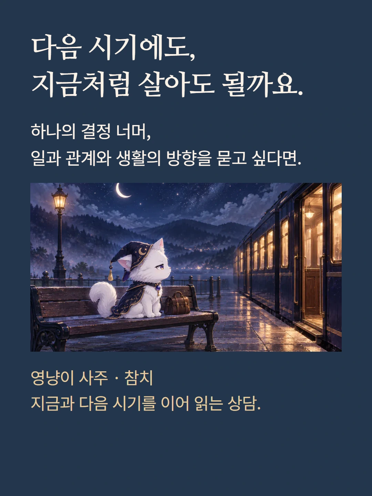
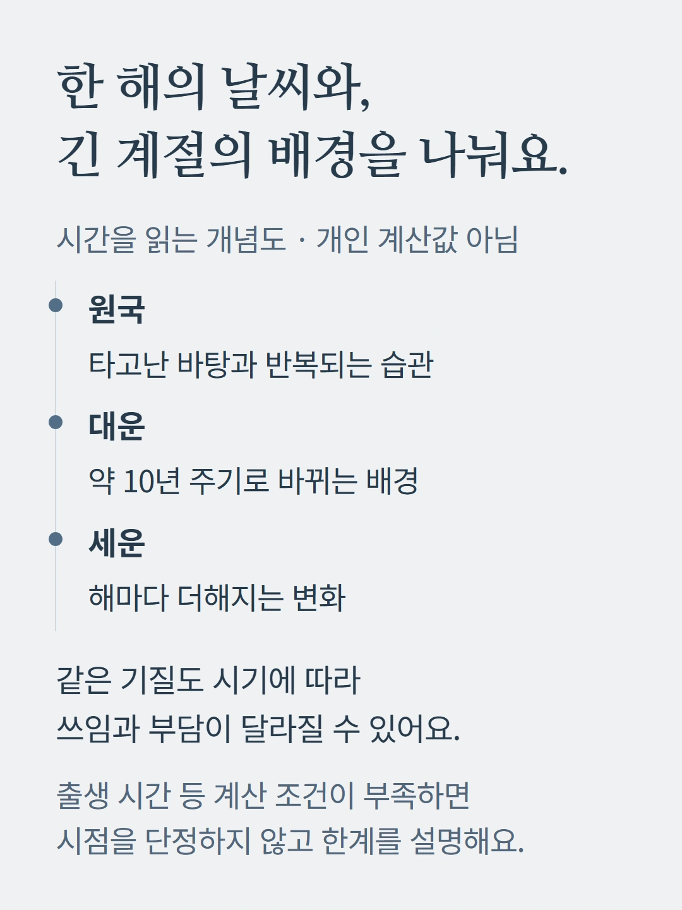
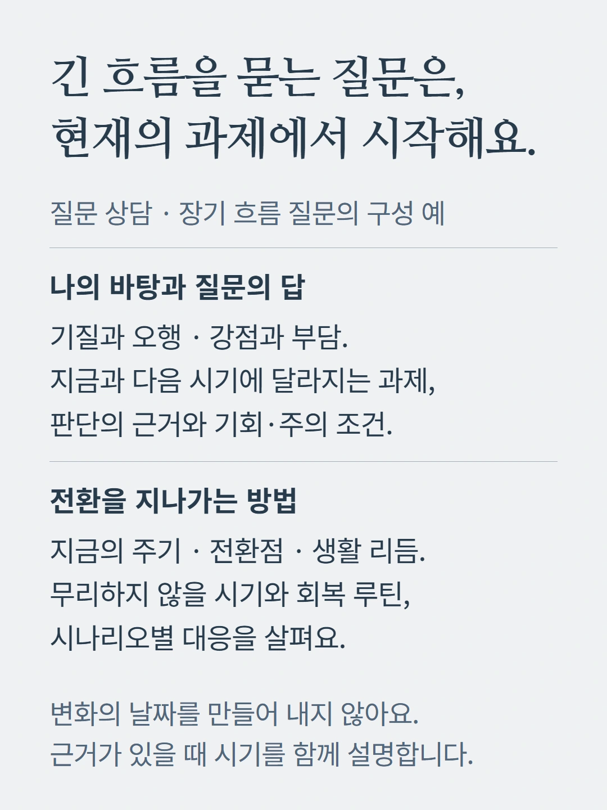
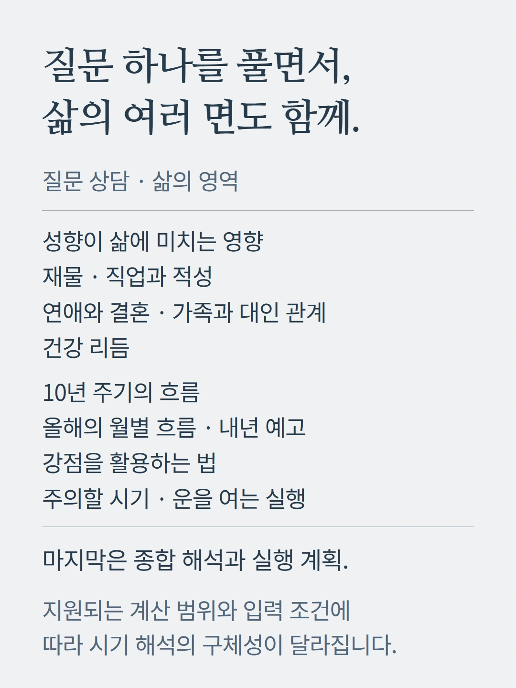
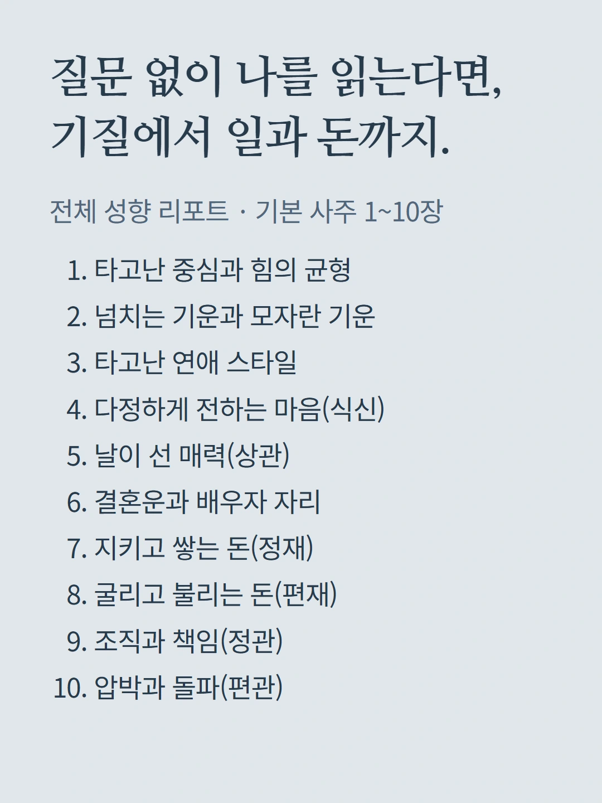
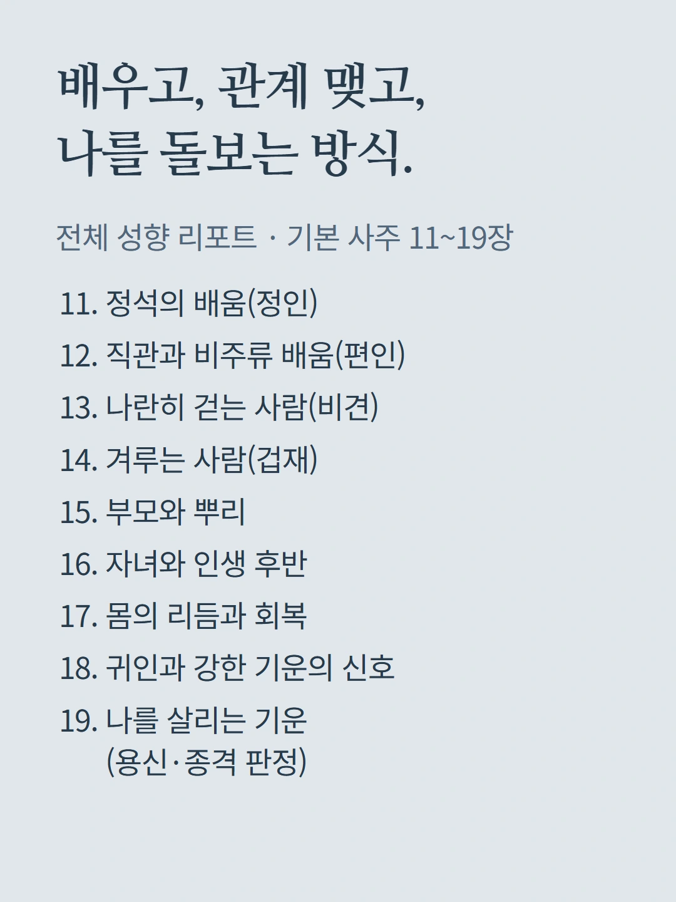
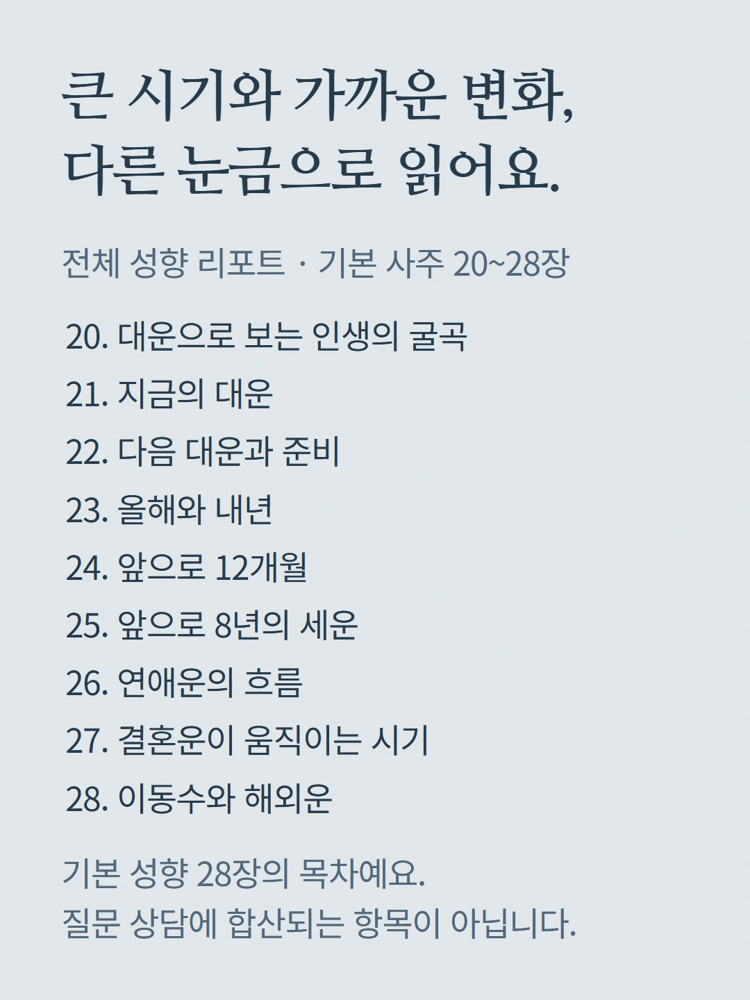
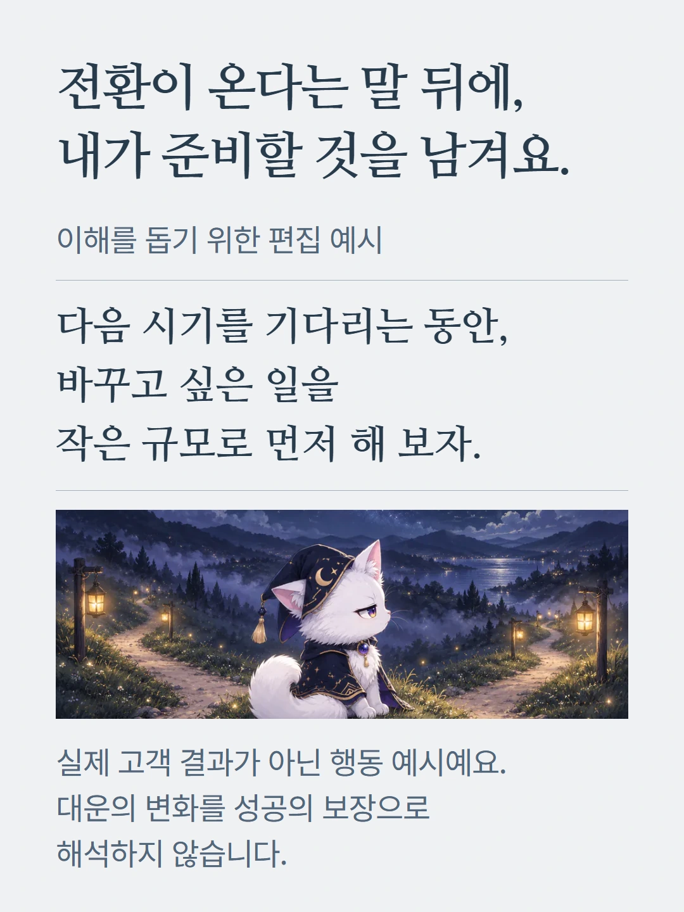
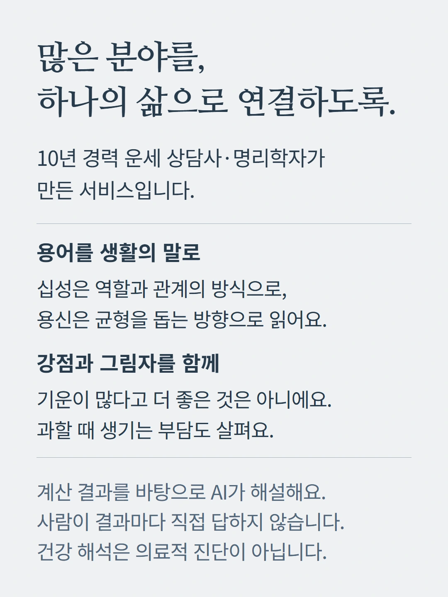
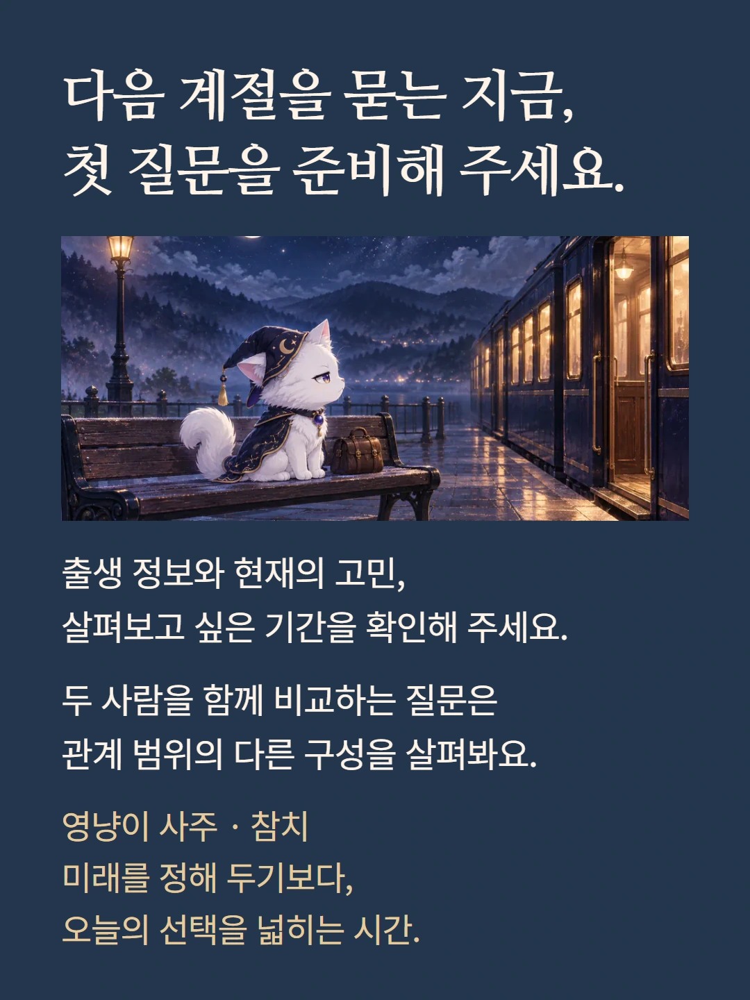

로컬 편집 미리보기. 실제 화면은 mobile.json 및 실제 화면 캡처를 참조하세요.










장기 흐름 도식과 대화는 이해를 돕기 위한 편집 예시이며 실제 고객 결과가 아닙니다. 질문 상담과 전체 성향 리포트는 별도 선택 흐름입니다. 대운·세운은 미래 사건의 확정 날짜나 성공 확률이 아닙니다. 계산 가능한 출생 정보와 시기 근거 안에서 해석합니다. 가격과 추가 질문 조건은 기존 상담 준비 화면에서 확인해 주세요.